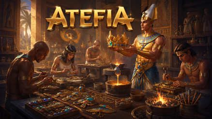

Casino Welcome Bonus
100% up to €500 + 200 FS

Sport Welcome Bonus
100% up to €100

Tournaments
Daily prizes

VIP Free bet Daily
50% up to €500


Table of Contents

Jak Działa Atefia Mobile W 2026: Co Warto Ustawić
Wyobraź sobie, że masz wolny wieczór, a telefon już podpowiada: “wejdź, tylko na chwilę”. Większość osób wchodzi bez planu, a potem dziwi się, że sesja trwa dwa razy dłużej, niż zakładali. Na mobilu wszystko jest szybkie - i właśnie dlatego potrzebujesz prostych ram, zanim zaczniesz klikać.
Najpierw zrób jedno: zdecyduj, po co dziś wchodzisz. Test aplikacji? Krótka rozrywka? Dłuższa sesja w weekend? Kiedy cel jest jasny, wybór gier i tempo przestają być przypadkowe. To banalne, ale działa, bo przeciwdziała “scrollowaniu” lobby, które zjada czas.
Druga rzecz to ustawienia, które wyciszają chaos. W praktyce chodzi o trzy przełączniki: powiadomienia, limity oraz przypomnienia o czasie. Jeżeli zostawisz włączone wszystkie komunikaty marketingowe, telefon będzie cię wciągał w mikro-sesje w ciągu dnia. Jeśli zostawisz tylko alerty bezpieczeństwa, a resztę przytniesz, odzyskasz kontrolę nad rytmem.
Trzeci element to stabilność urządzenia. Jeśli telefon jest przeładowany aplikacjami w tle, ma mało wolnego miejsca i działa w agresywnym trybie oszczędzania energii, to nawet najlepsza platforma będzie wyglądała jak “zamulona”. W 2026 to wciąż prawda: wydajność zaczyna się od porządku w telefonie, nie od nerwów.
Czwarta rzecz, często pomijana, to prywatność na ekranie blokady. Wyobraź sobie kod bezpieczeństwa wyświetlony na wierzchu, gdy telefon leży na stole. Nie trzeba panikować - wystarczy ustawić powiadomienia tak, by informowały, ale nie pokazywały treści wprost.
Na koniec - kontekst dla dorosłych użytkowników. Platforma jest dostępna w Poland i korzystanie powinno odbywać się w ramach obowiązujących zasad oraz z myślą o odpowiedzialnej rozrywce. Bez wielkich słów: grasz tylko tym, co możesz stracić i kończysz wtedy, kiedy plan mówi “stop”, a nie kiedy emocje próbują negocjować.
Jak Ustawić Powiadomienia Bez Kuszenia Na Okrągło
Wyobraź sobie, że dostajesz ping o “nowości”, otwierasz “tylko zobaczyć” i nagle znika pół godziny. To nie jest wada charakteru - to mechanika nawyku. Najprościej: zostaw powiadomienia związane z bezpieczeństwem konta, a komunikaty promocyjne ogranicz do minimum, jeśli wiesz, że cię rozpraszają.
Dodatkowo ustaw podgląd treści na ekranie blokady w trybie prywatnym. Dzięki temu widzisz, że coś przyszło, ale szczegóły nie są widoczne dla osób obok. W praktyce to jedna decyzja, która podnosi komfort korzystania poza domem.
Co Zrobić, Gdy Telefon “Pożera Czas” W Lobby
Wyobraź sobie, że wchodzisz do lobby i zamiast grać, przewijasz ofertę jak feed w socialach. Pomaga prosta reguła: trzy próby i wybór. Sprawdzasz trzy tytuły, wybierasz jeden i grasz przez ustalony blok czasu. Potem dopiero decydujesz, czy zmieniasz, czy kończysz.
Jeśli czujesz, że wchodzisz w tryb “jeszcze jeden i zobaczę”, uruchom przypomnienie o końcu sesji. Takie przypomnienie działa jak zimny prysznic - przerywa autopilota i przywraca decyzje na twoją stronę.
Atefia Android: Instalacja I Pierwsze Ustawienia
Wyobraź sobie instalację na Androidzie w autobusie, na słabym zasięgu i z baterią na czerwono. A potem zdziwienie, że coś się nie dograło, a aplikacja ładuje się w pętli. Najlepszy start to warunki “na spokojnie”: stabilna sieć, trochę miejsca w pamięci, żadnego multitaskingu w trakcie.

Po instalacji nie rób wszystkiego naraz. Najpierw logowanie, potem szybki przegląd ustawień konta, a dopiero później gry i ewentualne operacje finansowe. Ten porządek ma sens, bo kiedy coś pójdzie nie tak, łatwiej zrozumiesz, na którym etapie - zamiast zgadywać po fakcie.
Na Androidzie warto też zwrócić uwagę na tryb oszczędzania energii i danych. Bywa pomocny, ale potrafi ograniczać działanie w tle: opóźniać powiadomienia, ubijać sesję, a nawet powodować odświeżanie ekranu w nieodpowiednim momencie. Jeśli widzisz takie objawy, zrób test: krótka sesja z oszczędzaniem i krótka bez - różnica jest często natychmiastowa.
Uprawnienia I Oszczędzanie Energii: Małe Rzeczy, Duży Efekt
Wyobraź sobie, że system prosi o kilka uprawnień, a ty klikasz “zezwól” dla świętego spokoju. Potem masz wrażenie, że telefon jest zasypany komunikatami i działa ciężej. Praktyczna zasada: dawaj tylko to, co jest potrzebne do działania (internet, powiadomienia bezpieczeństwa), a resztę zostaw na później, kiedy wiesz, po co to ma być.
Jeśli powiadomienia przychodzą z opóźnieniem albo aplikacja “gubi” stan, sprawdź ustawienia oszczędzania baterii. Wiele problemów, które wyglądają jak błędy platformy, to w rzeczywistości agresywne usypianie aplikacji przez system.
Atefia Ios: Logowanie, Prywatność I Stabilność
Wyobraź sobie, że wychodzisz z domu, w połowie logowania telefon przeskakuje z Wi-Fi na dane i nagle pojawiają się dodatkowe prośby o potwierdzenie. To nie musi być awaria - często to skutek zmiany warunków w trakcie. Najprostsza rutyna to jedna sieć na czas wejścia i operacji, a zmiany dopiero po wyjściu.
Na urządzeniach Apple dobrze jest też ustawić prywatność powiadomień. Jeśli telefon leży na stole, a obok siedzi ktoś znajomy, nie chcesz pełnych szczegółów konta widocznych na ekranie blokady. Wystarczy ograniczyć podgląd treści i zostawić sam alert.
Jeżeli po aktualizacji systemu aplikacja działa wolniej, zrób najpierw podstawy: zamknij w tle, uruchom ponownie i sprawdź, czy problem wraca. W 2026 wciąż działa zasada “jedna zmiana na raz” - inaczej trudno stwierdzić, co faktycznie pomogło.

Atefia Pobierz: Skąd Brać Instalację Bez Ryzyka
Wyobraź sobie, że ktoś wysyła ci “szybką wersję” w wiadomości i mówi: “to działa lepiej”. W praktyce to najkrótsza droga do kłopotów, bo telefon to nie tylko gry, ale też twoje konto mailowe, bankowość i prywatne dane. Dorosły nawyk jest prosty: żadnych skrótów, tylko standardowe kanały instalacji dla danego urządzenia.
Po pobraniu nie traktuj instalacji jako mety. Zrób krótki przegląd: ustawienia bezpieczeństwa, powiadomienia, limity sesji, a dopiero potem rozrywka. Wyobraź sobie, że ustawiasz limity dopiero po godzinie grania - wtedy trudniej ci przerwać, bo jesteś już “w środku”. Kiedy ustawisz je na początku, kończenie sesji przestaje być walką.
Jeśli coś się nie zgadza, nie szukaj “magicznych wersji”. Najpierw sprawdź aktualizacje, pamięć urządzenia i stabilność sieci. Dopiero gdy problem powtarza się w tym samym miejscu, ma sens kontakt ze wsparciem - ale z konkretnym opisem, nie z ogólnym “nie działa”.
Bezpieczne Źródła I Unikanie Skrótów
Wyobraź sobie instalację z niepewnego pliku - na początku wygląda okej, a potem telefon zaczyna zachowywać się dziwnie. I nagle nie wiesz, czy to problem aplikacji, czy problem instalacji. Dlatego najlepsza praktyka jest nudna: instalujesz jak każdy inny program w telefonie, bez kombinowania.
Jeżeli kusi cię “łatwiejsza droga”, zapytaj siebie: czy zrobiłbyś tak samo z aplikacją bankową? Jeśli odpowiedź brzmi “nie”, to wiesz, co robić. W 2026 ostrożność w instalacji to normalny standard, nie paranoja.
Co Sprawdzić Od Razu Po Instalacji
Wyobraź sobie, że logujesz się, wszystko działa, a potem przy pierwszym powiadomieniu okazuje się, że nie dociera do ciebie nic ważnego. Po instalacji sprawdź trzy elementy: powiadomienia bezpieczeństwa, ustawienia prywatności na ekranie blokady oraz lokalizację narzędzi limitów i przerw.
Jeśli te trzy punkty masz ogarnięte, reszta jest prostsza. A kiedy pojawi się problem, wiesz, gdzie szukać, zamiast zgadywać w stresie.
Atefia Download: Aktualizacje, Pamięć I Pętle Ładowania
Wyobraź sobie sytuację: wczoraj było płynnie, dziś lobby ładuje się wolniej i wszystko wygląda “ciężej”. Pierwszy odruch to złość, ale częściej wygrywa chłodna diagnostyka. Najpierw sprawdź, czy masz wolne miejsce w pamięci i czy telefon nie jest przeładowany procesami w tle. Potem sprawdź stabilność sieci - bo mobilne przełączanie Wi-Fi/dane w trakcie potrafi wywołać pętle odświeżania.
W praktyce pomaga mała rutyna: zamknij aplikację, uruchom ponownie telefon, wejdź jeszcze raz na stabilnej sieci i sprawdź, czy problem wraca. Jeśli nie wraca, masz odpowiedź. Jeśli wraca - wtedy możesz myśleć o czyszczeniu danych aplikacji, ale zawsze krok po kroku, bez robienia wszystkiego naraz.
Jeżeli błąd występuje zawsze w tym samym miejscu, zapisz sobie: na jakim ekranie, o jakiej porze, na jakiej sieci. To brzmi jak przesada, ale w rozmowie ze wsparciem oszczędza połowę czasu, bo nie zaczynasz od “chyba”, tylko od konkretu.
Jak Rozpoznać Problem Sieci Od Problemu Urządzenia
Wyobraź sobie, że na Wi-Fi wszystko działa, a na danych mobilnych ładuje się w nieskończoność. To mocny sygnał, że winny jest kontekst połączenia, a nie konto. W takiej sytuacji nie ma sensu robić resetów w kółko - lepiej zmienić warunki i sprawdzić raz jeszcze.
Jeśli jest odwrotnie (na danych działa, na Wi-Fi nie), możliwe, że sieć blokuje część ruchu lub jest przeciążona. Najlepsza reakcja jest spokojna: wybierasz stabilniejszą sieć i dopiero wtedy próbujesz wejść lub dokończyć czynność.
FAQ
Najlepiej robić instalację na stabilnej sieci i z sensownym poziomem baterii, bo pośpiech tworzy błędy i przerwane pobieranie. Trzymaj się standardowych kanałów instalacji dla swojego urządzenia i unikaj losowych plików z niepewnych miejsc. Po uruchomieniu ustaw powiadomienia bezpieczeństwa oraz prywatność na ekranie blokady, żeby wrażliwe treści nie były widoczne dla innych. Jeśli coś ładuje się długo, zamknij aplikację i uruchom ponownie raz, zamiast klikać w pętli.
Zacznij od planu: budżet, czas i reguła wyjścia, bo wtedy to ty kontrolujesz tempo, a nie lobby. Włącz przypomnienie o zakończeniu sesji i ustaw limit wydatków, żeby nie polegać na nastroju w środku rozgrywki. Sprawdź też prywatność powiadomień i zabezpiecz dostęp do konta mocnym hasłem przechowywanym w bezpiecznym miejscu. Taki start sprawia, że nawet krótka sesja jest spokojniejsza.
Mobilna rozgrywka ma mało tarcia: szybkie rundy, proste gesty i ciągłe bodźce, przez co “jeszcze chwila” potrafi się wydłużać bez końca. Pomaga przypomnienie czasu i twarda reguła zakończenia, której się trzymasz. Jeśli zauważysz, że grasz bardziej z rozpędu niż dla przyjemności, zrób krótką przerwę i dopiero potem zdecyduj, czy wracasz. To prosta metoda na wyłączenie autopilota.
Najpierw sprawdź podstawy: wolne miejsce w pamięci, aplikacje w tle i jakość połączenia, bo to najczęstsze przyczyny spowolnień. Zrestartuj aplikację raz i unikaj zmiany sieci w trakcie logowania lub operacji finansowych, bo to potrafi zrywać sesję. Jeśli problem wraca zawsze w tym samym miejscu, zanotuj ekran i przybliżoną porę, bo to ułatwia diagnozę. Dopiero gdy sytuacja jest powtarzalna, kontakt ze wsparciem ma sens.
Operacje finansowe rób na stabilnej sieci i bez przełączania aplikacji, bo przerwane czynności tworzą niepewność, czy wszystko się wykonało. Wybierz jedną główną metodę płatności i trzymaj się jej przez dłuższy czas, dzięki czemu proces jest bardziej przewidywalny. Weryfikację danych wykonuj wcześniej, gdy masz spokój, a nie wtedy, gdy chcesz szybko zlecić wypłatę. Krótka notatka z datą i kwotą ostatnich operacji bywa bardzo pomocna w razie pytań.
Gdy pojawia się irytacja, pośpiech albo chęć “odrobienia”, bo wtedy emocje przejmują ster i łatwo wyjść poza plan. Krótki timeout przerywa autopilota i pomaga wrócić do spokojnych decyzji, a często prowadzi do zakończenia sesji bez presji. Jeśli widzisz powtarzalny wzorzec przeciągania rozgrywki, dłuższa przerwa bywa najlepszą ochroną. To normalne narzędzie dla dorosłych użytkowników, którzy chcą utrzymać rozrywkę w zdrowych ramach.
Zamiast ogólnego “nie działa”, podaj fakty: urządzenie, przybliżoną godzinę, ekran, na którym występuje problem, oraz co już sprawdziłeś (restart, wyjście i wejście po zmianie sieci, zwolnienie pamięci). Opisz jeden konkretny scenariusz krok po kroku, bez dopisywania kilku różnych problemów naraz. Jedno uporządkowane zgłoszenie oszczędza czas, bo wsparcie nie musi dopytywać o podstawy. Dzięki temu szybciej dostajesz realne kroki, a nie listę ogólnych porad.